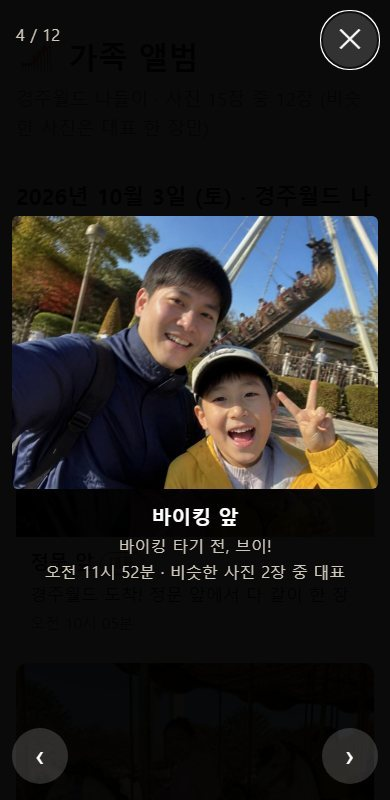

시작 전에 한 번만
준비할 것 네 가지
- Claude 유료 계정으로 claude.ai에 로그인해 주세요. 수업에서는 계정이 제공됩니다.
- Claude 데스크톱 앱(Windows·macOS)을 설치해 주세요. 1교시는 채팅창에서, 2·3교시는 앱의 Code 탭에서 합니다.
- 설정 → 기능(Capabilities)에서 '코드 실행 및 파일 생성'과 아티팩트 관련 항목이 켜져 있는지 확인해 주세요. 메뉴 이름은 화면에 따라 조금 다를 수 있습니다.
- 메모장을 열어 두세요. 잘 된 부탁 문장을 모아 두면 2일차에 그대로 다시 씁니다.
실습 자료 받기
내 영수증이나 사진으로 하실 때는 카드번호와 계좌번호가 보이지 않게 가려 주세요. 사진은 원본이 아니라 복사본으로 하세요.
세 실습 모두 이 순서로 합니다
- 기준을 말한다무엇을 어떻게 해 달라는지 문장으로 적어요
- 계획을 읽고 허락한다만들기 전에 Claude가 보여 주는 계획을 읽어요
- 결과를 직접 확인한다숫자와 사진은 내 눈으로 한 번 더
- 말로 고친다마음에 안 드는 곳을 그대로 말해요
1교시 · 50분 · 채팅창
모임 정산 계산기 만들기
모임이나 여행 경비를 나누는 계산기를 말로 만들고, 영수증으로 검산하고, 말로 고쳐 갑니다. 채팅창 옆 창에 앱(아티팩트)이 바로 뜹니다.

이 계산기로 할 수 있는 것
- 참석자와 지출을 넣으면 총액과 부담액이 나옵니다.
- 누가 누구에게 얼마를 보내면 끝나는지, 보내는 횟수를 가장 적게 보여 줍니다.
- 술값처럼 일부만 나눌 항목은 마신 사람만 골라 나눕니다.
- 결과를 단톡방에 붙여 넣을 문장으로 복사합니다.
1. 화면부터 설명 듣고 만들기
처음 부탁에는 "만들기 전에 화면이 어떻게 생길지 먼저 설명해 줘"를 꼭 넣습니다. 설명이 마음에 안 들면 만들기 전에 고칠 수 있습니다.
claude.ai에서 새 채팅을 열고 아래 부탁 문장을 붙여 넣어 주세요.
부탁 문장 · 정산 계산기모임 정산 계산기를 만들어 줘. - 참석자 이름을 넣고, 각자 낸 돈을 항목별로 입력 - 총액, 1인당 금액, 누가 누구에게 얼마 보내면 끝나는지 표시 - 보내는 횟수는 가장 적게 - 휴대폰에서도 보기 좋게 큰 글씨와 큰 버튼 만들기 전에 화면이 어떻게 생길지 먼저 설명해 줘.
부탁 문장은 '무엇을 넣고', '무엇이 나와야 하고', '어디서 쓰는지'를 적는 것이 요령입니다.
Claude가 보여 주는 화면 설명을 읽어 주세요.
설명에서 이런 것을 찾아보세요
- 참석자, 지출 항목, 결과가 어떤 순서로 나오는지
- 버튼과 글씨가 휴대폰에서 누르기 쉬운 크기인지
- 내가 부탁한 것 중 빠진 것은 없는지 (빠졌다면 "○○도 넣어 줘"라고 먼저 말해요)
Claude가 짐작한 내용은 설명에 함께 적어 줍니다. 틀린 가정이 있으면 이때 바로잡으세요.
설명이 괜찮으면 허락해 주세요.
부탁 문장 · 허락하기좋아, 그대로 만들어 줘
채팅창 옆 창에 계산기가 뜨면 눌러 보세요.
이름을 넣고 추가 버튼을 눌러 보고, 금액을 넣어 총액이 바뀌는지 확인합니다.
2. 영수증으로 검산하기
Claude가 만든 계산기도 틀릴 수 있습니다. 숫자는 내 손으로 한 번 맞춰 봐야 믿을 수 있습니다.

참석자 네 명을 넣어 주세요.
이름은 민수, 지영, 서준, 나입니다.
영수증 6장의 합계 금액을 항목으로 하나씩 넣어 주세요.
가게 이름과 영수증 맨 아래의 합계 금액을 읽어 넣습니다. 여섯 장 모두 한 사람이 냈고, 네 명이 똑같이 나누는 것으로 합니다.
receipt1은 품목을 더하면 64,000원인데 찍힌 합계는 68,000원입니다. 합계 금액(68,000원)을 쓰세요. receipt6은 일부러 구겨지고 흐리게 만든 사진이라 숫자를 잘 보고 읽어야 합니다.
결과가 아래와 같은지 확인해 주세요.
총액335,300원1인당 금액 (4명)83,825원같으면 성공입니다. 다르면 금액을 하나씩 영수증과 대조해 보세요. "영수증 금액 6개 합이 335,300원이 되도록 계산을 다시 점검해 줘"라고 부탁해도 됩니다.
3. 말로 하나씩 고치기
고치기 전에 이것만
- 고치기 전에 아티팩트 제목 메뉴에서 복제(Duplicate)해 두세요. 망가져도 원본이 남습니다.
- 마음에 안 들면 "방금 고친 것을 취소하고 이전 상태로 되돌려 줘"라고 말하세요.
- "좀 더 좋게 해 줘"처럼 막연하게 말하지 말고, 어디를 어떻게 바꿀지 적어 주세요. 고친 뒤에는 같은 금액으로 다시 검산하세요.
고치기 ① 영수증 사진으로 입력하기
지출 항목을 일일이 입력하지 않아도, 영수증 사진만 올리면 항목 이름과 금액이 입력 칸에 채워지게 해 줘. 읽은 값은 바로 추가하지 말고, 내가 확인하고 고친 다음에 추가 버튼을 누르게 해 줘. 금액을 못 읽으면 못 읽었다고 알려 줘.
실습 영수증 사진을 올려서 가게 이름과 합계가 채워지는지 보세요. 채워진 숫자는 꼭 영수증과 맞춰 본 뒤 추가하세요.
만들어 둔 완성 예시로 실습 영수증 6장을 읽혀 본 결과, 합계 금액은 여섯 장 모두 맞게 읽혔습니다(합 335,300원). 가게 이름은 세 장이 엉뚱한 글자로 읽혔으니 보이는 대로 고쳐 쓰세요. 만드는 Claude와 환경에 따라 결과는 다를 수 있습니다.
앱 안에서 사진이 안 읽히면
사진 인식은 Claude 화면과 인터넷 환경에 따라 동작하지 않을 수 있습니다. 그럴 때는 영수증 사진을 채팅창에 직접 올리고 아래처럼 부탁해 보세요. Claude가 사진을 읽어 계산기에 미리 넣어 줍니다.
올린 영수증 6장을 한 장씩 읽어서 가게 이름과 합계 금액을 지출 항목으로 계산기에 미리 넣어 줘. 읽기 어려운 글자나 숫자는 추측하지 말고 '확인 필요'라고 알려 줘.
고치기 ② 단톡방에 붙여 넣을 문장 복사
정산 결과를 단톡방에 붙여 넣기 좋게 문장으로 복사하는 버튼을 만들어 줘. 총액, 지출 내역, 누가 누구에게 얼마 보내는지가 들어가게 해 줘.
버튼을 누른 뒤 메모장에 붙여 넣어서 문장이 잘 나오는지 확인하세요. 아래처럼 나오면 잘 된 것입니다.
🧾 정산 결과 총액 335,300원 (4명, 총무 민수) [지출 내역] - 한솔마을 한정식 68,000원 (전원) - 행복셀프주유소 55,000원 (전원) ... 💸 송금 안내 (총 3번) 나 → 민수 83,825원 서준 → 민수 83,825원 지영 → 민수 83,825원
고치기 ③ 마신 사람끼리만 나누기
지출 항목마다 나눌 사람을 고를 수 있게 해 줘. 기본은 전원이고, 술값이나 밥값은 마신 사람끼리만 계산되게 해 줘. 항목 목록에도 누가 나누는지 보이게 해 줘.
검산: 영수증 한 장(예: 카페 보문호수 23,500원)을 세 명만 고르고 다시 계산해 보세요. 그 항목은 세 명이 나눈 금액으로 바뀌고, 고르지 않은 사람의 금액은 그만큼 줄어야 합니다. 나누어떨어지지 않는 1원 단위는 한 사람이 더 부담해서 총합이 항상 맞아야 합니다.
고치기 ④ 총무가 모두 낸 것으로 계산하기
항목마다 '낸 사람'을 고르지 말고, 참석자를 넣을 때 총무를 한 명 지정하게 해 줘. 모든 지출은 총무가 낸 것으로 보고 계산해서, 나머지 사람들이 총무에게 얼마를 보내면 되는지 나오게 해 줘.
검산: 총무를 민수로 두고 앞의 금액을 넣으면 지영, 서준, 나가 각각 83,825원을 민수에게 보내는 3번이 나와야 합니다. 총무를 바꾸면 받는 사람도 바뀌어야 합니다.
고치기 ⑤ 총무 계좌번호 넣기
맨 위에 총무 계좌번호를 입력하는 칸을 따로 만들어 줘. 단톡방용 문장에서 '인원별 부담액' 부분은 빼고, 그 자리에 '총무 계좌: ○○'가 들어가게 해 줘. 계좌번호를 안 넣으면 그 자리는 비워 둬.
검산: 계좌번호를 넣고 복사한 문장에 계좌가 보이는지, 비우고 복사하면 "총무 계좌: "만 남는지 확인하세요. 연습할 때는 진짜 계좌번호 대신 "국민 123-456 민수" 같은 가짜 번호를 쓰세요.
4. 부탁 문장 모아 두기
지금까지 고친 내용을 한 문장으로 모으면 다음에 한 번에 만들 수 있습니다. 메모장에 저장해 두세요.
모임 정산 계산기를 만들어 줘. - 맨 위에 총무 계좌번호 입력 칸 (비워 둘 수 있음) - 참석자 이름을 넣고, 그중 한 명을 총무로 지정. 모든 지출은 총무가 낸 것으로 계산 - 지출 항목은 이름과 금액을 입력하고, 항목마다 나눌 사람을 고를 수 있게 해 줘 (기본은 전원) - 영수증 사진을 올리면 항목 이름과 금액이 입력 칸에 채워지게 해 줘. 바로 추가하지 말고 내가 확인하고 추가 - 결과: 총액, 인원별 부담액, 누가 누구에게 얼마 보내는지 (보내는 횟수는 가장 적게) - '단톡방용 문장 복사' 버튼: 총액, 지출 내역, 총무 계좌, 송금 안내가 들어가게 - 1원 단위가 남으면 한 사람이 더 부담해서 총합이 맞게 - 휴대폰에서도 보기 좋게 큰 글씨와 큰 버튼 만들기 전에 화면이 어떻게 생길지 먼저 설명해 줘.
한 번에 여러 가지를 부탁하면 결과가 달라질 수 있으니, 안 되는 부분은 위처럼 하나씩 고치는 것이 안전합니다.
완성 확인
돈 이야기에서 지킬 것
하지 말 것
- 카드번호·계좌번호가 보이는 영수증 올리기
- 계산기가 알려 준 대로 확인 없이 송금하기
- 실제 계좌번호를 공개된 곳에 올리기
이렇게
- 민감한 숫자는 가리고 찍기
- 금액은 영수증과 한 번 더 맞춰 보고 송금은 내가 직접
- 정산 문장은 모임 단톡방에만 붙여 넣기
막힐 때
채팅창 옆에 계산기가 안 떠요
설정 → 기능에서 아티팩트와 파일 생성 관련 항목이 켜져 있는지 확인하고, "계산기를 아티팩트로 다시 만들어 줘"라고 부탁해 보세요.
계산이 틀려요
2단계처럼 금액을 하나씩 영수증과 대조해 보세요. 그래도 틀리면 "총액이 335,300원이어야 하는데 ○○원으로 나와. 계산을 다시 점검해 줘"처럼 맞는 숫자와 틀린 숫자를 함께 말해 주세요.
고쳤더니 다른 게 망가졌어요
"방금 고친 것을 취소하고 이전 상태로 되돌려 줘"라고 말하세요. 미리 복제해 둔 것이 있으면 그 복제본에서 다시 시작해도 됩니다. 한 번에 여러 가지를 고치면 원인을 찾기 어렵습니다.
영수증 사진이 잘 안 읽혀요
흐리거나 구겨진 영수증(receipt6)은 읽기 어렵습니다. 합계가 안 읽히면 직접 입력하세요. 읽은 값은 언제나 영수증과 맞춰 본 뒤에 추가합니다.
복사 버튼을 눌렀는데 붙여 넣어지지 않아요
카카오톡 안에서 연 화면은 복사가 막힐 때가 있습니다. 주소를 Chrome이나 Safari에서 다시 열어 보세요. 그래도 안 되면 "복사 대신 문장을 화면에 보여 주고 길게 눌러 복사하게 해 줘"라고 부탁하세요.
2교시 · 50분 · 데스크톱 앱 Code 탭
사진 폴더로 가족 앨범 만들기
내 컴퓨터의 사진 폴더 하나를 Claude에게 맡겨서, 날짜별로 묶이고 누르면 크게 보이는 앨범 웹페이지(index.html)를 만듭니다. 완성된 앨범 파일은 내 컴퓨터에서만 열립니다. 다만 Claude가 문구를 쓰려고 사진 내용을 볼 수 있으니, 맡겨도 되는 사진만 고르세요.

1교시와 달라진 점
1교시의 채팅창은 말로 앱을 만들어 옆 창에 띄웠습니다. 2교시의 Code 탭은 Claude가 내 컴퓨터의 폴더 안에서 파일을 직접 만듭니다. 그래서 사진 같은 내 파일을 다룰 수 있지만, 그만큼 어떤 폴더를 맡기는지와 권한 창을 내가 읽고 판단해야 합니다.
준비물
- 실습 사진 15장(위에서 내려받기) 또는 내 여행 사진 복사본 30장 안팎
- Claude 데스크톱 앱과 유료 계정
- 사진을 담을 새 폴더 하나 (예: 바탕화면의 album)
따라 하기
사진을 새 폴더에 복사해 주세요.
압축을 푼 사진 15장을 바탕화면에 새로 만든 album 폴더에 복사합니다. 원본이 든 폴더를 통째로 맡기지 않고, 이번 작업용 폴더 하나만 맡기는 것이 안전합니다.
데스크톱 앱에서 Code 탭을 열고, album 폴더를 골라 주세요.
입력창 아래에서 Local을 고르고 폴더 열기(Open folder…)로 album 폴더를 고릅니다. 권한 모드는 Manual로 해 주세요. 파일을 바꾸기 전에 Claude가 매번 물어봅니다.
메뉴 이름은 앱 업데이트에 따라 조금 다를 수 있습니다. 안 보이면 아래 '막힐 때'를 확인하세요.
아래 부탁 문장을 붙여 넣어 주세요.
부탁 문장 · 가족 앨범폴더에 있는 사진으로 가족 앨범 웹페이지 index.html을 만들어 줘. - 사진 파일은 옮기거나 이름을 바꾸거나 지우지 말 것 - 찍은 날짜별로 묶고, 날짜마다 제목 - 휴대폰과 컴퓨터 둘 다 보기 좋게 - 인터넷 없이 더블클릭으로 열리게 만들기 전에 계획부터 보여 줘.
'지우지 말 것'을 꼭 넣으세요. "필요 없는 건 지워 줘"처럼 지우기를 맡기는 부탁은 하지 않습니다.
Claude가 보여 주는 계획을 읽어 주세요.
계획에서 이런 것을 찾아보세요
- 사진을 옮기거나 지우거나 이름을 바꾸지 않고 복사본이나 그대로 쓴다고 적혀 있는지
- 찍은 날짜를 어디서 읽는지 (파일 이름, 사진에 기록된 촬영 날짜)
- 인터넷에서 글꼴이나 라이브러리를 가져오지 않는지 (더블클릭으로 열려야 합니다)
실습 사진 15장은 모두 10월 3일 하루에 찍은 것이라, 날짜로 묶으면 묶음이 하나만 나옵니다. 계획에서 Claude가 이 점을 짚어 줄 수 있습니다.
계획이 괜찮으면 허락해 주세요. 권한 창이 뜨면 읽고 판단하세요.
부탁 문장 · 허락하기좋아, 그대로 진행해
권한 창에 사진을 삭제하거나 옮기는 내용이 보이면 거절하고 "사진은 건드리지 말고 index.html만 만들어 줘"라고 다시 말하세요.
폴더의 index.html을 더블클릭해서 열어 보세요.
브라우저에서 날짜 제목 아래에 사진이 시간순으로 펼쳐지면 성공입니다. 앨범은 사진 파일을 같은 폴더에서 불러오므로, 휴대폰으로 보려면 album 폴더 전체를 옮겨야 합니다.
마음에 안 들면 말로 고쳐요
사진과 시간만 있어 허전하고, 크게 보고 싶다면
고치는 말 · 문구, 크게 보기, 대표 사진사진과 시간만 있으니 너무 허전해. 장소나 문구 같은 것도 추가하고, 사진을 누르면 크게 나오게 해. 같은 사진만 연달아 있으면 대표 사진만 뽑아서 해.
실습 사진에서는 이렇게 바뀌었습니다. 사진마다 "정문 앞 — 경주월드 도착! 정문 앞에서 다 같이 한 장" 같은 장소와 문구가 붙었습니다. 사진을 누르면 화면 가득 열리고, 몇 초 간격으로 찍은 비슷한 사진 세 쌍은 눈을 감았거나 흔들린 사진을 빼고 한 장씩만 남아 15장 중 12장이 보였습니다. 빠진 사진은 지워지지 않고 폴더에 그대로 있습니다.
실습에서 나온 결과 예시이고, 사람마다 문구와 고르는 사진이 조금 다릅니다. 놀이기구의 실제 이름처럼 사진만으로 알 수 없는 것은 일반적인 이름으로 적힐 수 있으니, 틀린 이름은 아래처럼 바꾸세요.
설명 하나만 바꾸고 싶다면
고치는 말 · 바꿔 쓰기회전목마 사진 설명을 '회전목마 타고 손 흔드는 우리 딸'로 바꿔 줘
고친 뒤에는 브라우저에서 새로고침(F5)을 눌러야 바뀐 모습이 보입니다. 마음에 안 들면 "방금 고친 것을 취소하고 이전 상태로 되돌려 줘"라고 말하세요.
사진 순서는 이렇게 알아요
Claude가 날짜별로 묶을 때는 세 가지를 단서로 씁니다. 파일 이름(예: IMG_20261003_100512는 2026년 10월 3일 10시 05분 12초), 사진 안에 기록된 촬영 날짜, 그리고 사진 내용입니다. 카카오톡으로 받은 사진은 촬영 날짜가 지워져 있을 때가 많아서 순서가 엉킬 수 있습니다.
완성 확인
가족 사진을 다룰 때
하지 말 것
- 사진이 잔뜩 든 상위 폴더를 통째로 맡기기
- "필요 없는 건 지워 줘"라고 부탁하기
- 가족 얼굴이 담긴 앨범을 아무에게나 보내기
이렇게
- 복사본 폴더 하나만 맡기기
- 지우기 대신 "비슷한 사진은 대표만 보이게" 하고 파일은 그대로 두기
- 앨범은 내 컴퓨터에서만 열고, 공유는 보낼 사람을 정하고
막힐 때
Code 탭이 안 보여요
유료 계정으로 로그인했는지, 웹이 아니라 데스크톱 앱인지 확인해 주세요. 앱을 최신으로 업데이트하면 보일 수 있습니다.
앨범이 열리는데 사진이 안 보여요
index.html과 사진 파일이 같은 폴더에 있어야 합니다. index.html만 다른 곳으로 옮기지 마세요.
순서가 이상해요
"날짜를 모르는 사진은 맨 뒤로"를 넣어 다시 부탁해 보세요. 카카오톡으로 받은 사진은 촬영 날짜가 지워져 있을 수 있습니다. 아이폰 HEIC 사진은 Claude가 직접 못 보니 JPG로 준비하세요.
고쳤는데 화면이 그대로예요
브라우저에서 새로고침(F5)을 눌러 보세요. 파일을 고친 뒤에도 열려 있던 화면은 저절로 바뀌지 않습니다.
3교시 · 50분 · 데스크톱 앱 Code 탭
기록이 남는 가계부 만들기
날짜·분류·금액·메모를 큰 버튼으로 넣으면 이번 달 합계와 분류별 막대그래프가 보이는 가계부입니다. 기록은 파일이 아니라 이 브라우저 안에 저장되어 창을 닫아도 남습니다.
이 가계부로 할 수 있는 것
- 큰 버튼으로 기록하고, 이번 달 합계와 분류별 비율을 막대로 봅니다.
- 위쪽 드롭다운으로 지난달 기록을 조회합니다.
- 분류를 추가하거나 지웁니다.
- 영수증 사진을 올리면 금액·날짜 등이 채워집니다.
- 엑셀에서 열 수 있는 CSV로 내보냅니다.
준비물
- 2교시와 같은 데스크톱 앱 Code 탭
- 새 폴더 하나 (예: 바탕화면의 gagyebu)
- 실습 영수증 5장(위에서 내려받기) 또는 지난주에 쓴 돈 5건 메모
- 엑셀 또는 구글 시트 (CSV를 열어 볼 때)
따라 하기
Code 탭에서 gagyebu 폴더를 골라 주세요.
2교시와 같은 방법입니다. 입력창 아래에서 Local을 고르고 폴더 열기로 새 폴더를 고릅니다. 권한 모드는 Manual입니다.
아래 부탁 문장을 붙여 넣어 주세요.
부탁 문장 · 가계부이 폴더에 휴대폰용 가계부 index.html 한 파일을 만들어 줘. - 날짜(오늘이 기본), 분류, 금액, 메모를 큰 버튼으로 입력 - 분류: 식비, 장보기, 교통, 생활, 아이, 기타 - 이번 달 합계와 분류별 막대그래프 - 기록은 파일에 넣지 말고 이 브라우저에만 저장 - 인터넷 없이 더블클릭으로 열리게 만들기 전에 계획부터 보여 줘.
'기록은 파일에 넣지 말고 이 브라우저에만 저장'이 핵심입니다. 그래야 나중에 앱을 인터넷에 올려도 내 기록이 함께 올라가지 않습니다.
계획을 읽고 허락해 주세요.
계획에서 이런 것을 찾아보세요
- '브라우저에 저장'한다는 말이 있는지 (파일 안에 숫자를 적는다고 되어 있으면 고쳐 달라고 하세요)
- 파일이 index.html 하나뿐인지
- 외부 인터넷 자료를 가져오지 않는지
부탁 문장 · 허락하기좋아, 그대로 진행해
index.html을 열어 영수증 5장의 금액을 넣어 보세요.
영수증마다 합계를 가리키는 글자가 합계, 받을금액, 결제금액, 청구금액, 총결제로 다릅니다. 가게 이름은 메모에 적고, 분류를 골라 저장하세요.
다 넣은 뒤에 정답을 확인하세요
가게 날짜 분류 금액 한솥골 한정식 10-03 식비 33,000 푸른들 마트 행복점 10-11 장보기 23,910 한빛주유소 10-15 교통 52,000 별빛문구 어린이 완구 10-20 아이 21,800 온누리 건강약국 10-26 생활 30,500 합계 161,210 영수증 날짜가 10월이라 10월이 아닌 달에 연습하면 '이번 달' 합계에 안 들어갑니다. 그때는 위쪽 드롭다운에서 해당 달을 고르세요.
새로고침(F5)하고, 창을 닫았다가 다시 열어 보세요.
넣은 기록이 그대로 있으면 성공입니다. 기록이 어디에 있는지 아래 표로 정리해 둡니다.
index.html 파일 안 이 브라우저 안 내 기록 없음 있음 다른 브라우저로 열면 같은 앱 기록이 비어 있음 사이트 데이터를 지우면 그대로 기록이 사라짐 그래서 중요한 기록은 아래의 CSV로 백업해 두세요.
파일에 내 숫자가 없는지 확인해 보세요.
index.html을 메모장으로 열고 Ctrl+F로 방금 넣은 금액(예: 23910)을 찾아보세요. 찾을 수 없으면 통과입니다. 기록이 파일 밖, 브라우저에만 있다는 뜻입니다. 찾아지면 "기록을 파일에 넣지 말고 브라우저에만 저장하게 고쳐 줘"라고 부탁하세요.
마음에 안 들면 말로 고쳐요
한 번에 하나씩 부탁하고, 고칠 때마다 기록이 그대로 남아 있는지 확인하세요. 실습에서는 아래 네 가지를 고쳤습니다.
고치기 ① 영수증 사진으로 입력하기
1교시 모임 정산 프로그램처럼 영수증 사진을 올리면 항목에 맞게 들어가게 해 줘. 금액, 날짜, 가게 이름(메모), 분류를 가능한 만큼 채우고, 바로 저장하지 말고 내가 확인한 뒤 저장하게 해 줘.
만들어 둔 완성 예시로 가계부 영수증 5장을 읽혀 본 결과, 금액·날짜·분류는 5장 모두 맞았고 가게 이름은 두 장이 엉뚱한 글자로 읽혔습니다. 가게 이름은 보이는 대로 고치세요.
이 기능만 영수증을 읽는 도구를 인터넷에서 처음 한 번 내려받아야 해서 인터넷이 필요합니다. 나머지는 인터넷 없이 됩니다. 사진은 밖으로 보내지 않고 이 기기 안에서만 처리합니다.
고치기 ② 분류 추가·삭제
분류를 내가 직접 추가하거나 지울 수 있게 해 줘. 이미 쓴 분류를 지워도 그 기록은 지워지지 않고 그래프에 남게 해 줘.
검산: '취미' 분류를 추가해서 기록 한 건을 넣고, 그 분류를 지워 보세요. 기록은 남고 그래프에 "삭제한 분류"로 표시되어 합계가 그대로여야 합니다.
고치기 ③ CSV 내보내기
기록을 CSV 파일로 내보내는 버튼을 만들어 줘. 지금 보는 달만 내보내는 버튼과 전체를 내보내는 버튼 두 개. 열은 날짜, 분류, 금액, 메모이고, 엑셀에서 한글이 깨지지 않게 해 줘.
검산: 내려받은 CSV를 엑셀로 열어 줄 수와 금액이 앱의 기록과 같은지 보세요.
고치기 ④ 월별로 보기
화면 맨 위에 월을 고르는 드롭다운을 만들어 줘. 고른 달의 합계, 분류별 막대그래프, 기록 목록이 바뀌게 하고, 기본은 이번 달이야.
검산: 지난달 날짜로 기록 한 건을 넣으면 드롭다운에 그 달이 생기고, 그 달을 고르면 합계가 그 한 건만큼 나와야 합니다.
완성 확인
돈 기록을 다룰 때
하지 말 것
- 내 실제 금액을 index.html 파일 안에 적어 두기
- 가계부 파일과 CSV를 아무에게나 보내기
- CSV 백업 없이 사이트 데이터 지우기
이렇게
- 기록은 브라우저에만 저장하고, 파일에는 숫자를 넣지 않기
- 한 달에 한 번 CSV로 백업하기
- 영수증 사진에서 카드번호는 가리고 올리기
막힐 때
기록이 사라졌어요
다른 브라우저로 열었거나, 파일을 다른 곳으로 옮겼거나, 사이트 데이터를 지웠을 수 있습니다. 비공개 창에서는 저장이 안 되고, 화면 위에 경고가 뜹니다. 평소 쓰는 브라우저의 일반 창에서 열어 주세요.
CSV 한글이 깨져요
"CSV 앞에 BOM을 붙여서 엑셀에서 한글이 깨지지 않게 해 줘"라고 부탁하세요. 깨진 화면을 캡처해서 보여 주면 더 정확히 고칩니다.
그래프가 안 나와요
기록이 이번 달 날짜가 아니면 합계가 0원으로 나옵니다. 위쪽 월 드롭다운에서 기록이 있는 달을 골라 보세요.
영수증을 올려도 아무것도 안 채워져요
영수증 읽기는 인터넷이 연결되어 있어야 하고, 처음에는 1분쯤 걸립니다. 계속 안 되면 금액을 직접 입력하세요. 흐리거나 구겨진 영수증은 금액을 못 읽을 수 있습니다.